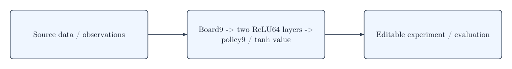
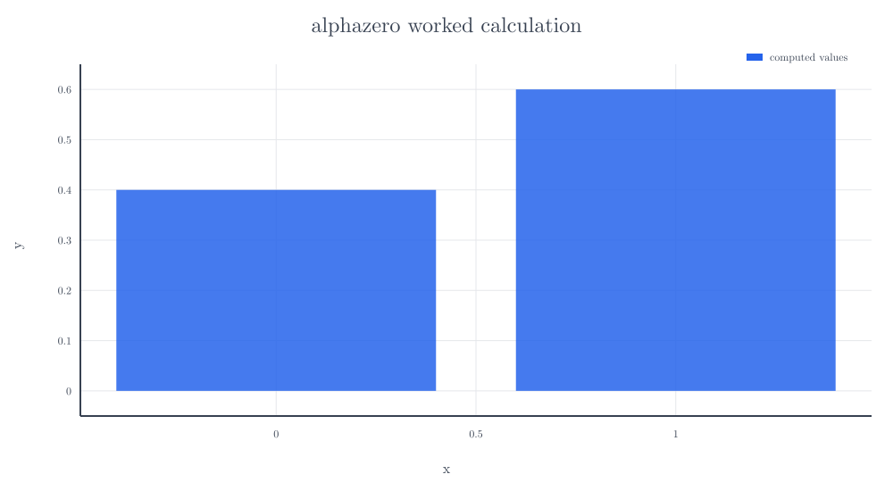
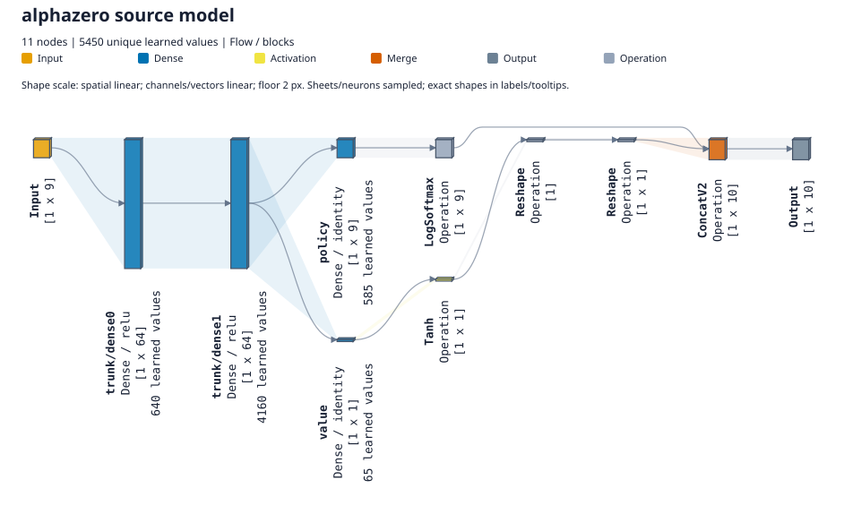
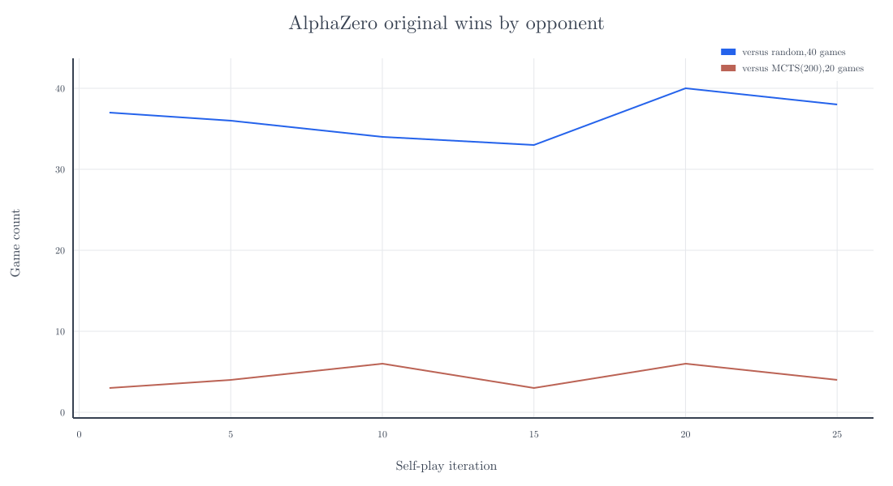
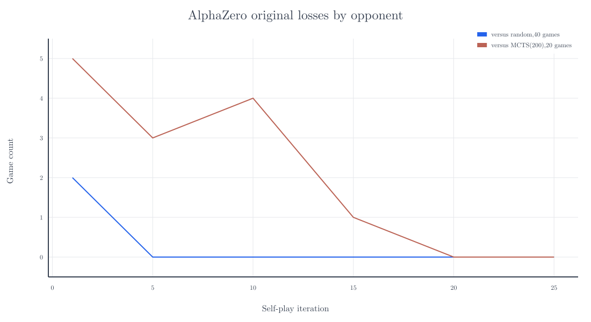

AlphaZero: Explicit Self-Play and Native Policy/Value Graphs
Abstract
Canonical native graphs and owning search/data objects support a complete editable source experiment. Original seeds, parameter names, actual default budgets, objectives and random streams are retained. Fitting, self-play, episode collection and planning schedules remain visible.
Follow the model and data
Board9 -> two ReLU64 layers -> policy9 / tanh value.
#include <dm/dm.hpp>
int main(){std::filesystem::create_directories("build");dm::graphics::Diagram d(29,1200);dm::graphics::DiagramNodeStyle s;s.width=14;s.height=5;s.font_size=23;d.node("input",{-18,0},"Source data / observations",s).node("graph",{0,0},"Board9 -> two ReLU64 layers -> policy9 / tanh value",s).node("loop",{18,0},"Editable experiment / evaluation",s).edge("input","graph").edge("graph","loop").save_svg("build/alphazero_method.svg");}
A hand-checkable calculation
Search visits2,3 become policy targets.4,.6. These search targets differ from the network prior. Terminal outcomes separately supervise the current-player value.
#include <dm/dm.hpp>
int main(){std::filesystem::create_directories("build");std::vector<double>values{2./5,3./5};std::print("| coordinate | computed value |\n|---:|---:|\n");for(size_t i=0;i<values.size();++i)std::print("| {} | {:.9f} |\n",i,values[i]);std::vector<double>x(values.size());std::iota(x.begin(),x.end(),0.);double low=std::min(0.,*std::min_element(values.begin(),values.end())),high=std::max(0.,*std::max_element(values.begin(),values.end())),span=std::max(1.,high-low);dm::graphics::RPlot::create().bars(x,values,"computed values",{37,99,235}).ylim(low-.05*span,high+.05*span).title("alphazero worked calculation").size(1000,550).save_svg("build/alphazero_worked.svg");}| coordinate | computed value |
|---|---|
| 0 | 0.400000000 |
| 1 | 0.600000000 |

Inspect the native model architecture
The source nine-cell board graph with two ReLU64 layers, nine log-policy outputs and a scalar tanh value. This trace uses an independent store and does not change fitting.
#include <dm/dm.hpp>
int main(){namespace n=dm::nn;namespace m=n::models;std::filesystem::create_directories("build");n::ParameterStore p(0);n::Module network([&](const n::Tensor&x){auto y=m::BoardPolicyValue(p,x,9,64);return n::concat({y.logp,n::expand_dims(y.value,1)},1);},"alphazero source model");n::ModelPlotOptions options;options.detail=n::ModelPlotDetail::Blocks;options.sizing.minimum_extent=2;options.sizing.max_planes=2;network.plot(n::zeros({1,9}),options).save_svg("build/alphazero_network.svg");}
Complete preserved source experiment
The original default protocol below is retained, including existing bounded-mode limits and deferred quality assertions where present. AlphaZero retains25 iterations of20 self-play games and60 updates per iteration. World Models retains300 random episodes,2000 VAE steps,1500 recurrent steps and60 generations with24 candidates. DATAMUNGE_EXAMPLES_FULL=1 restores full budgets only where the original helper uses that flag. No external-framework parity is asserted. Capture hooks read existing histories and final parameters without additional random draws or evaluation calls.
#include <dm/dm.hpp>
namespace report_capture {
inline dm::nn::NamedTensors arrays;inline std::map<std::string,std::vector<double>> traces;
inline void Trace(const std::string&name,double value){traces[name].push_back(value);}inline int monitor_index=0,checkpoint_index=0;
template<class T>void Save(const std::string& name,const std::vector<T>&v){arrays.push_back({name,dm::nn::from_vector(v)});}
struct Checkpoint{dm::nn::ParameterStore& store;~Checkpoint(){auto tag=std::to_string(checkpoint_index++);for(const auto& name:store.names())arrays.push_back({"parameters_"+tag+"_"+name,store.at(name).detach().clone()});}};
struct Flush{~Flush(){for(const auto&[name,values]:traces)Save(name,values);if(!arrays.empty()){std::filesystem::create_directories("build");dm::nn::save_npz("build/alphazero_source.npz",arrays);}}};inline Flush flush;
}
// CMD: just run-nn alphazero
// AlphaZero: self-play, MCTS and a policy/value network.
//
// Port of tflow's alphazero. Silver et al. 2017, scaled down to tic-tac-toe.
// A network maps the board (from the player to move's point of view) to move
// probabilities and a value in [-1, 1]. MCTS uses those as priors and leaf
// values instead of random playouts (PUCT). Self-play games, with Dirichlet
// noise at the root for exploration, produce training targets: the search's
// visit distribution for the policy and the game outcome for the value.
// Training and self-play alternate until the agent stops losing.
//
// The TF graph and session become an eager nn network over a ParameterStore
// (the MCTS evaluator runs it under NoGradGuard); the search (common/rl/
// mcts.hpp, copied from tflow), the games and the std::mt19937_64 stream are
// tflow's. Weights use nn's generator, so the training numbers match tflow
// only statistically. tflow films one game of the trained agent against
// MCTS(200) on vsim's 3D board; the film is omitted but the game is played
// and its outcome printed. Options: seed=N (weight seed, default 0),
// threads=N. The port adds checks (exit 1 on failure).
// Editable workflow support: checks.hpp
// Small runtime checks used by the executable nn examples. They stay on in
// Release builds and make the example exit nonzero on failure, so `just
// run-all-nn` doubles as a regression test against the recorded TF numbers.
// Editable workflow support: runtime.hpp
// Bounded demonstrations by default; opt into convergence experiments explicitly.
namespace example_runtime {
inline bool Full() {
const char* value = std::getenv("DATAMUNGE_EXAMPLES_FULL");
return value && std::string(value) == "1";
}
template <typename T> T Limit(T requested, T quick_limit) {
return Full() ? requested : std::min(requested, quick_limit);
}
inline void Describe() {
if (!Full())
std::cout << "Quick demonstration: bounded training; convergence metrics require "
"DATAMUNGE_EXAMPLES_FULL=1.\n";
}
} // namespace example_runtime
namespace check {
inline void Require(bool condition, const std::string& message) {
if (!condition) throw std::runtime_error(message);
}
// A short demonstration checks execution, derivatives and persistence; reaching
// a published accuracy/return requires the separately requested full schedule.
inline void TrainingQuality(bool condition, const std::string& message) {
if (example_runtime::Full()) Require(condition, message);
else std::cout << " full-training quality check deferred: " << message << '\n';
}
inline void Near(double actual, double expected, double tolerance, const std::string& message) {
if (!std::isfinite(actual) || !std::isfinite(expected) || std::abs(actual - expected) > tolerance)
throw std::runtime_error(message + ": got " + std::to_string(actual) + ", expected " + std::to_string(expected));
}
/// Expects `f` to throw; returns the message.
template <typename F>
std::string Throws(F&& f, const std::string& message) {
try {
f();
} catch (const std::exception& e) {
return e.what();
}
throw std::runtime_error(message + ": expected an exception");
}
} // namespace check
inline void Header(const std::string& title) {
const std::size_t pad = title.size() < 60 ? 60 - title.size() : 0;
std::cout << "\n== " << title << " " << std::string(pad, '=') << "\n";
}
// Editable workflow support: rl/board_games.hpp
namespace rl {
using datamunge::rl::environments::Game;
using datamunge::rl::environments::GridGame;
using datamunge::rl::environments::TicTacToe;
using datamunge::rl::environments::ConnectFour;
using datamunge::rl::environments::Othello;
}
// Editable workflow support: rl/dqn_common.hpp
// datamunge::nn port of tflow_examples src/common/rl/dqn_common.h.
// Pieces shared by the DQN-family examples: hyper-parameters, the epsilon
// schedule, a training monitor, Q-value heads (plain / dueling), greedy
// evaluation, the C51 distribution projection, and Adam with global-norm
// clipping (tflow's nn::Adam).
//
// Changes from the TF version: the TF hardware options (device=, threads=,
// xla=) are accepted and ignored, since nn runs eagerly on the CPU; QHead
// builds on a ParameterStore and returns a tensor instead of adding graph
// nodes; the noisy-network head (nn::NoisyDense) is not included, because
// datamunge::nn has no noisy layer yet.
// Editable workflow support: rl/env.hpp
namespace rl {
using datamunge::rl::environments::Obs;
using datamunge::rl::environments::Action;
using datamunge::rl::environments::ActionSpace;
using datamunge::rl::environments::StepResult;
using datamunge::rl::environments::Env;
using datamunge::rl::environments::EnvBase;
using datamunge::rl::environments::Transition;
using datamunge::rl::environments::TabularEnv;
}
// Editable workflow support: rl/utils.hpp
// datamunge::nn port: copied from tflow_examples src/common/rl/utils.h (TF-free code, unchanged).
// Small helpers shared by the RL examples: episode statistics, random and
// greedy rollouts, and printing.
namespace rl {
struct EpisodeStats {
std::vector<float> returns;
std::vector<int> lengths;
float mean_return() const {
return returns.empty() ? 0.f
: std::accumulate(returns.begin(), returns.end(), 0.f) / returns.size();
}
float mean_length() const {
return lengths.empty() ? 0.f
: std::accumulate(lengths.begin(), lengths.end(), 0.f) / lengths.size();
}
float min_return() const { return *std::min_element(returns.begin(), returns.end()); }
float max_return() const { return *std::max_element(returns.begin(), returns.end()); }
};
// Run `episodes` episodes of `env` choosing actions with `policy(obs)`.
// Uniformly random actions.
inline void PrintStats(const std::string& label, const EpisodeStats& s) {
std::printf(" %-32s return mean %8.2f min %8.2f max %8.2f length mean %6.1f\n",
label.c_str(), s.mean_return(), s.min_return(), s.max_return(), s.mean_length());
}
using dm::rl::foundations::ArgMax;using dm::rl::foundations::ArgMaxRandomTie;
inline std::string FormatObs(const Obs& o, int max_elems = 8) {
std::string s = "[";
for (size_t i = 0; i < o.size() && static_cast<int>(i) < max_elems; ++i) {
char buf[32];
std::snprintf(buf, sizeof buf, "%s%.3f", i ? " " : "", o[i]);
s += buf;
}
if (static_cast<int>(o.size()) > max_elems) s += " ...";
return s + "]";
}
} // namespace rl
namespace rl {
namespace nn = datamunge::nn;
struct DqnConfig {
int steps = 50000; // environment steps
int warmup = 1000; // steps before training starts
int batch = 64;
int buffer = 50000;
float gamma = 0.98f; // 0.99 is the usual choice; 0.98 bounds Q by 50 and makes CartPole far more stable
float lr = 5e-4f;
float clip_norm = 10.f;
int target_sync = 500; // hard target update period (steps), used when tau == 1
float tau = 0.005f; // target <- tau * online + (1 - tau) * target every step; tau = 1 means a hard copy every target_sync steps
float eps_start = 1.f, eps_end = 0.05f;
int eps_decay_steps = 10000;
int hidden = 128;
int train_every = 2;
int log_every = 5000;
int eval_every = 5000;
int eval_episodes = 5;
uint64_t seed = 0;
};
// TF-only options that the ports accept and ignore.
inline bool IsHardwareOption(const std::string& key) {
return key == "device" || key == "threads" || key == "intra_threads" || key == "inter_threads" || key == "xla";
}
// Overrides from the command line, e.g. `just run-nn dqn steps=50000 lr=5e-4`.
inline void ParseConfig(int argc, char** argv, DqnConfig* c) {
for (int i = 1; i < argc; ++i) {
const std::string arg = argv[i];
const size_t eq = arg.find('=');
if (eq == std::string::npos) continue;
const std::string key = arg.substr(0, eq);
const float v = std::strtof(arg.c_str() + eq + 1, nullptr);
if (IsHardwareOption(key)) continue;
if (key == "steps") c->steps = static_cast<int>(v);
else if (key == "warmup") c->warmup = static_cast<int>(v);
else if (key == "batch") c->batch = static_cast<int>(v);
else if (key == "buffer") c->buffer = static_cast<int>(v);
else if (key == "gamma") c->gamma = v;
else if (key == "lr") c->lr = v;
else if (key == "clip_norm") c->clip_norm = v;
else if (key == "target_sync") c->target_sync = static_cast<int>(v);
else if (key == "tau") c->tau = v;
else if (key == "eps_start") c->eps_start = v;
else if (key == "eps_end") c->eps_end = v;
else if (key == "eps_decay_steps") c->eps_decay_steps = static_cast<int>(v);
else if (key == "hidden") c->hidden = static_cast<int>(v);
else if (key == "train_every") c->train_every = static_cast<int>(v);
else if (key == "log_every") c->log_every = static_cast<int>(v);
else if (key == "eval_every") c->eval_every = static_cast<int>(v);
else if (key == "seed") c->seed = static_cast<uint64_t>(v);
else if (key != "task" && key != "game") std::fprintf(stderr, "unknown option %s\n", arg.c_str());
}
if (!example_runtime::Full()) {
c->steps = std::min(c->steps, 512);
c->warmup = std::min(c->warmup, 32);
c->batch = std::min(c->batch, 8);
c->log_every = c->eval_every = std::max(1, c->steps);
c->eval_episodes = 1;
c->eps_decay_steps = std::min(c->eps_decay_steps, c->steps);
example_runtime::Describe();
}
}
inline float Epsilon(const DqnConfig& c, int step) {
const float frac = std::min(1.f, static_cast<float>(step) / c.eps_decay_steps);
return c.eps_start + frac * (c.eps_end - c.eps_start);
}
// Greedy evaluation with any action function.
inline float Evaluate(Env& env, const std::function<int(const Obs&)>& act, int episodes, uint64_t seed) {
double total = 0;
for (int e = 0; e < episodes; ++e) {
Obs obs = env.reset(seed + e);
while (true) {
StepResult r = env.step(act(obs));
total += r.reward;
obs = r.obs;
if (r.done()) break;
}
}
report_capture::Trace("eval_call",static_cast<float>(total/episodes));
return static_cast<float>(total / episodes);
}
// Tracks episode returns and losses and prints one line per log period.
class Monitor {
public:
explicit Monitor(const DqnConfig& cfg, const char* third_column = "eps") : cfg_(cfg) {
std::printf(" %8s %8s %12s %7s %10s %10s\n", "step", "episodes", "return(20)", third_column, "loss", "eval");
}
void EndEpisode(float ret) { returns_.push_back(ret); }
~Monitor(){auto tag=std::to_string(id_);report_capture::Save("return_"+tag,returns_);report_capture::Save("step_"+tag,steps_);report_capture::Save("eval_"+tag,evaluation_);report_capture::Save("loss_"+tag,mean_losses_);}
void AddLoss(float loss) { losses_.push_back(loss); }
int episodes() const { return static_cast<int>(returns_.size()); }
float RecentReturn(int n = 20) const {
if (returns_.empty()) return 0.f;
const size_t from = returns_.size() > static_cast<size_t>(n) ? returns_.size() - n : 0;
return std::accumulate(returns_.begin() + from, returns_.end(), 0.f) / (returns_.size() - from);
}
void Log(int step, float eps, float eval_return) {
const float loss = losses_.empty() ? 0.f : std::accumulate(losses_.begin(), losses_.end(), 0.f) / losses_.size();
steps_.push_back(step);evaluation_.push_back(eval_return);mean_losses_.push_back(loss);
losses_.clear();
char eval[16];
if (std::isnan(eval_return)) std::snprintf(eval, sizeof eval, "%10s", "");
else std::snprintf(eval, sizeof eval, "%10.1f", eval_return);
std::printf(" %8d %8d %12.1f %7.3f %10.4f %s\n", step, episodes(), RecentReturn(), eps, loss, eval);
std::fflush(stdout);
}
private:
int id_=report_capture::monitor_index++;std::vector<double>steps_,evaluation_,mean_losses_;
DqnConfig cfg_;
std::vector<float> returns_, losses_;
};
using dm::nn::models::ProjectDistribution;
// One observation as a [1, obs_dim] tensor.
inline nn::Tensor Row(const Obs& o) { return nn::from_vector(o, {1, static_cast<std::int64_t>(o.size())}); }
} // namespace rl
// Editable workflow support: rl/mcts.hpp
namespace rl {using dm::rl::planning::Evaluation;using dm::rl::planning::Evaluator;using dm::rl::planning::TerminalValue;using dm::rl::planning::RolloutEvaluator;using dm::rl::planning::Mcts;}
namespace nn = datamunge::nn;
using nn::Tensor;
namespace {
struct Example {
rl::Obs board;
std::vector<float> pi;
float z;
};
} // namespace
int main(int argc, char** argv) {
std::uint64_t seed = 0;
for (int i = 1; i < argc; ++i) {
const std::string arg = argv[i];
const size_t eq = arg.find('=');
if (eq == std::string::npos) continue;
const std::string key = arg.substr(0, eq), val = arg.substr(eq + 1);
if (key == "seed") seed = std::strtoull(val.c_str(), nullptr, 10);
else if (key == "threads") nn::set_num_threads(std::atoi(val.c_str()));
else if (!rl::IsHardwareOption(key)) std::fprintf(stderr, "unknown option %s\n", arg.c_str());
}
try {
rl::TicTacToe game;
const int cells = game.num_actions(), A = cells, hidden = 64;
const int iterations = 25, games_per_iter = 20, simulations = 50, batch = 64, train_steps = 60;
std::printf("== AlphaZero on tic-tac-toe: %d iterations of %d self-play games with %d simulations per move\n",
iterations, games_per_iter, simulations);
nn::ParameterStore params(seed);
report_capture::Checkpoint checkpoint_params{params};
using Out=nn::models::BoardPolicyValuePath;
auto net = [&](const Tensor& board) {
return nn::models::BoardPolicyValue(params,board,A,hidden);
};
{
nn::NoGradGuard no_grad;
net(nn::zeros({1, cells}));
}
nn::Optimizer native_adam(params,1e-3,{nn::OptimizerKind::Adam});
auto native_adam_minimize=[&](const Tensor& loss){auto gradients=nn::grad(loss,native_adam.parameters());double norm;if(1.0>0){auto clipped=nn::clip_by_global_norm(gradients,1.0);gradients=std::move(clipped.first);norm=clipped.second;}else norm=nn::global_norm(gradients);native_adam.step(gradients);return norm;};
std::mt19937_64 rng(0);
// The network as an MCTS evaluator: illegal moves are masked by the search.
auto probe = [&](const rl::Game& g) {
nn::NoGradGuard no_grad;
const Out o = net(rl::Row(g.Observation()));
rl::Evaluation e;
e.prior = nn::exp(o.logp).to_vector<float>();
e.value = o.value.item<float>();
return e;
};
rl::Evaluator net_eval = probe;
rl::Mcts search(net_eval, /*c_puct=*/1.5f);
rl::Mcts rollout_search(rl::RolloutEvaluator(&rng), 1.4f);
std::deque<Example> replay;
// Play `games` games of agent (net + MCTS, no noise, argmax) vs an opponent.
auto evaluate = [&](int games, const std::function<int(rl::Game&)>& opponent, int* wins, int* losses, int* draws) {
*wins = *losses = *draws = 0;
for (int g = 0; g < games; ++g) {
game.Reset();
const int agent_player = g % 2 + 1;
while (!game.Terminal()) {
int action;
if (game.CurrentPlayer() == agent_player) {
std::vector<int> counts = search.Search(game, simulations, rng, false);
action = static_cast<int>(std::max_element(counts.begin(), counts.end()) - counts.begin());
} else {
action = opponent(game);
}
game.Apply(action);
}
if (game.Winner() == 0) ++*draws;
else if (game.Winner() == agent_player) ++*wins;
else ++*losses;
}
report_capture::Trace("wins",*wins);report_capture::Trace("losses",*losses);report_capture::Trace("draws",*draws);
};
auto random_opponent = [&](rl::Game& g) {
auto l = g.LegalActions();
return l[rng() % l.size()];
};
auto mcts_opponent = [&](rl::Game& g) {
std::vector<int> counts = rollout_search.Search(g, 200, rng);
return static_cast<int>(std::max_element(counts.begin(), counts.end()) - counts.begin());
};
std::printf(" %4s %8s %8s %22s %22s\n", "iter", "examples", "loss", "vs random (W/L/D)", "vs MCTS-200 (W/L/D)");
int last_l1 = -1, last_l2 = -1, last_w1 = 0;
float first_loss = 0, last_loss = 0;
for (int it = 1; it <= iterations; ++it) {
// ---- Self-play with exploration: Dirichlet noise at the root and
// sampling moves from the visit distribution for the first moves.
for (int g = 0; g < games_per_iter; ++g) {
game.Reset();
std::vector<Example> episode;
std::vector<int> players;
while (!game.Terminal()) {
std::vector<int> counts = search.Search(game, simulations, rng, /*add_noise=*/true);
std::vector<float> pi(A, 0.f);
float total = 0;
for (int a = 0; a < A; ++a) total += counts[a];
for (int a = 0; a < A; ++a) pi[a] = counts[a] / total;
episode.push_back({game.Observation(), pi, 0.f});
players.push_back(game.CurrentPlayer());
int action;
if (static_cast<int>(episode.size()) <= 2) { // temperature 1 early, then greedy
float u = std::uniform_real_distribution<float>(0, 1)(rng), acc = 0;
action = A - 1;
for (int a = 0; a < A; ++a) {
acc += pi[a];
if (u < acc) {
action = a;
break;
}
}
} else {
action = static_cast<int>(std::max_element(pi.begin(), pi.end()) - pi.begin());
}
game.Apply(action);
}
for (size_t i = 0; i < episode.size(); ++i) {
episode[i].z = game.Winner() == 0 ? 0.f : (game.Winner() == players[i] ? 1.f : -1.f);
replay.push_back(episode[i]);
}
while (replay.size() > 4000) replay.pop_front();
}
// ---- Training on sampled examples.
for (int step = 0; step < train_steps; ++step) {
std::vector<float> b(static_cast<size_t>(batch) * cells), p(static_cast<size_t>(batch) * A), z(batch);
for (int i = 0; i < batch; ++i) {
const Example& e = replay[rng() % replay.size()];
for (int j = 0; j < cells; ++j) b[i * cells + j] = e.board[j];
for (int j = 0; j < A; ++j) p[i * A + j] = e.pi[j];
z[i] = e.z;
}
const Tensor pi_t = nn::from_vector(p, {batch, A}), z_t = nn::from_vector(z, {batch});
const Out o = net(nn::from_vector(b, {batch, cells}));
const Tensor loss = nn::mean(nn::square(z_t - o.value), {0}) - nn::mean(nn::sum(pi_t * o.logp, {1}), {0});
native_adam_minimize(loss);
last_loss = loss.item<float>();
check::Require(std::isfinite(last_loss), "finite training loss");
}
if (it == 1) first_loss = last_loss;
if (it % 5 == 0 || it == 1) {
int w1, l1, d1, w2, l2, d2;
evaluate(40, random_opponent, &w1, &l1, &d1);
evaluate(20, mcts_opponent, &w2, &l2, &d2);
std::printf(" %4d %8zu %8.3f %10d/%d/%-9d %10d/%d/%-9d\n", it, replay.size(), last_loss, w1, l1, d1, w2, l2, d2);
std::fflush(stdout);
last_w1 = w1, last_l1 = l1, last_l2 = l2;
}
}
std::printf(" (tic-tac-toe is a draw with perfect play: a trained agent never loses and beats random often)\n");
// In tflow, on film: the trained agent (X) against the MCTS opponent. Played here without the video.
game.Reset();
while (!game.Terminal()) {
const bool agent = game.CurrentPlayer() == 1;
std::vector<int> counts = agent ? search.Search(game, simulations, rng, false) : rollout_search.Search(game, 200, rng);
game.Apply(static_cast<int>(std::max_element(counts.begin(), counts.end()) - counts.begin()));
}
const int filmed_winner = game.Winner();
std::printf(" played game vs MCTS(200) (tflow films it): %s\n",
filmed_winner == 0 ? "draw" : filmed_winner == 1 ? "the agent wins" : "the agent loses");
// The network alone, without search, on the empty board.
game.Reset();
const rl::Evaluation e = probe(game);
std::printf(" raw network on the empty board: value %.2f, move probabilities:\n", e.value);
for (int r = 0; r < 3; ++r) {
std::printf(" ");
for (int c = 0; c < 3; ++c) std::printf(" %5.2f", e.prior[r * 3 + c]);
std::printf("\n");
}
check::Require(last_loss < first_loss, "the training loss falls from the first iteration");
check::Require(last_l1 <= 1 && last_w1 >= 20, "the trained agent (almost) never loses to random play and beats it in >= half the games");
check::Require(last_l2 <= 5, "the trained agent loses at most 5 of 20 games to MCTS(200)"); // TF: 0 (iter 25), 3 (iter 20); ours seeds 0-5: 0-5
check::Require(filmed_winner != 2, "the trained agent does not lose the game against MCTS(200)");
std::printf("\nchecks passed (vsim video omitted)\n");
} catch (const std::exception& ex) {
std::fprintf(stderr, "CHECK FAILED: %s\n", ex.what());
return 1;
}
return 0;
}
== AlphaZero on tic-tac-toe: 25 iterations of 20 self-play games with 50 simulations per move
iter examples loss vs random (W/L/D) vs MCTS-200 (W/L/D)
1 153 2.558 37/2/1 3/5/12
5 758 2.129 36/0/4 4/3/13
10 1527 1.627 34/0/6 6/4/10
15 2345 1.319 33/0/7 3/1/16
20 3166 1.428 40/0/0 6/0/14
25 4000 1.283 38/0/2 4/0/16
(tic-tac-toe is a draw with perfect play: a trained agent never loses and beats random often)
played game vs MCTS(200) (tflow films it): draw
raw network on the empty board: value 0.40, move probabilities:
0.35 0.01 0.05
0.02 0.13 0.04
0.23 0.03 0.13
checks passed (vsim video omitted)Actual source performance
These measurements come from the complete source run above; each series retains source execution order. A bounded run or one evaluation point does not establish convergence. Model loss and task return use separate figures.
#include <dm/dm.hpp>
int main(){auto data=dm::nn::load_npz("build/alphazero_source.npz");auto it=std::find_if(data.begin(),data.end(),[](const auto&v){return v.first=="wins";});auto all=it->second.to_vector<double>();auto plot=dm::graphics::RPlot::create();for(int opponent=0;opponent<2;++opponent){std::vector<double>x,y;for(size_t j=opponent;j<all.size();j+=2){x.push_back(j/2==0?1:(j/2)*5);y.push_back(all[j]);}plot.lines(x,y,opponent?"versus MCTS(200),20 games":"versus random,40 games",{37+opponent*150,99,235-opponent*150});}plot.title("AlphaZero original wins by opponent").x_label("Self-play iteration").y_label("Game count").size(1100,600).save_svg("build/alphazero_diagnostic0.svg");}
Actual source model/search diagnostics
These measurements come from the complete source run above; each series retains source execution order. A bounded run or one evaluation point does not establish convergence. Model loss and task return use separate figures.
#include <dm/dm.hpp>
int main(){auto data=dm::nn::load_npz("build/alphazero_source.npz");auto it=std::find_if(data.begin(),data.end(),[](const auto&v){return v.first=="losses";});auto all=it->second.to_vector<double>();auto plot=dm::graphics::RPlot::create();for(int opponent=0;opponent<2;++opponent){std::vector<double>x,y;for(size_t j=opponent;j<all.size();j+=2){x.push_back(j/2==0?1:(j/2)*5);y.push_back(all[j]);}plot.lines(x,y,opponent?"versus MCTS(200),20 games":"versus random,40 games",{37+opponent*150,99,235-opponent*150});}plot.title("AlphaZero original losses by opponent").x_label("Self-play iteration").y_label("Game count").size(1100,600).save_svg("build/alphazero_diagnostic1.svg");}
Interpretation and provenance
The retained checks and printed outcomes determine what this run supports. Weak or deferred quality checks are not evidence of full convergence. Native APIs provide pure differentiable model components, owning transitions and cloned-game search; every objective, optimizer, episode/self-play loop, controller search and training schedule stays editable above.
The two evaluation series retain their distinct opponents and counts:40 random-opponent games and20 MCTS(200)-opponent games at iterations1,5,10,15,20,25.